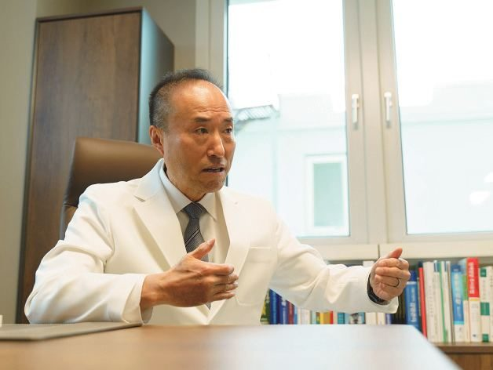

전립선암 수술 후 배뇨 변화와 회복 입원은 어떻게 하나요?
전립선암 수술 후 회복 시기의 입원·단기입원·외래 이용을 하일렌요양병원이 안내합니다. 수술받으신 병원 일정에 맞춰 단계마다 주치의가 진료하고, 환자와 상의하여 치료를 정합니다. 암 치료는 지금 다니시는 대학병원·암병원에서 그대로 이어 가시고, 하일렌요양병원은 입원과 외래 진료로 치료 중 생기는 부작용과 합병증을 치료하고 회복에 도움이 되는 치료를 진행합니다.
전립선암은 진행 정도에 따라 수술, 방사선, 호르몬 치료 등의 치료를 받습니다. 수술 후에는 혈뇨와 요실금 증상을 보일 수 있습니다. 증상에 따라 보존적 치료를 시행하거나 수술받으신 병원으로 응급 전원할지 결정합니다. 항호르몬 치료 또는 방사선 치료를 받는 환자는 치료에 따른 부작용 발생을 면밀히 관찰하고 증상에 따라 치료합니다.
전립선암 수술을 받으신 환자와 보호자가 회복 입원을 상담하시기 전에 궁금해하시는 것을 모았습니다.

- 대상
- 전립선암 수술 후 회복이 필요한 분
- 이용 방법
- 입원 · 단기입원(금·토·일 주말) · 외래 진료(주 1~5회)
- 입원 서류
- 소견서 또는 진료기록지 중 하나, 신분증, 피검사 결과지
- 야간
- 의료진이 24시간 상주하고, 밤에도 당직 의료진이 확인해 처방합니다.
- 문의
- 원내 상담실 · 카카오톡 채널 · 062-439-1000
전립선암 치료는 어떤 순서로 이어지나요
단계마다 주치의와 상의하여 치료를 진행합니다.
- 수술 후 회복 — 수술 직후에는 통증·상처·합병증을 관리합니다.
- 방사선 — 몇 주 동안 대학병원·암병원에 다니며 방사선 치료를 받는 시기입니다. 이 기간에도 입원과 외래 진료로 관리합니다.
- 항호르몬 치료 — 지속적인 치료와 관리가 필요한 시기입니다.
- 항암치료 — 항암 회차마다 부작용과 떨어진 면역을 입원이나 외래 진료로 관리합니다.
전립선암 의료진
장익완 병원장
- 조선대학교 의과대학 졸업
- 강원대학교 의과대학 의학박사
- 서울대학교병원 임상부교수 역임
- 누가요양병원 진료원장
- 엘리암요양병원 진료원장
- 대한림프 및 림프부종학회 정회원

이춘기 자문의
종양내과 자문의
- 미국 아이오와 대학병원 종양내과 전임의
- 미국 미시간 대학병원 종양내과 교수
- 미국 밴더빌트 의과대학 종양학 초청교수
의료진 약력은 의료진 소개에서 보실 수 있습니다.
이용 방법 — 환자의 상황에 따라 입원, 외래 진료 방법을 결정합니다
- 입원 — 수술받으신 병원에서 퇴원하시는 날 바로 입원하실 수 있습니다.
- 단기입원 — 직장을 쉬지 않고 금·토·일 주말에 입원하실 수 있습니다.
- 외래 진료 — 주 1~5회, 퇴근 후 저녁 시간도 가능합니다. 방사선 치료 기간에는 외래 진료와 입원 모두 이용하실 수 있습니다.
수술 후 관리
배뇨 변화와 수술 후 관리에 집중합니다.
- 주사·상처관리 전담팀의 수술 부위 소독
- 배뇨 변화 · 요실금 관리
- 수술 후 통증 조절
- 암재활 운동치료
- 허리·골반 통증 치료(통증 치료 · 재활치료)
- 24시간 상주 의료진 — 밤에도 당직 의료진이 확인해 처방합니다. 응급 상황이 생기면 상태를 확인하고 대학병원·암병원 진료가 필요한지 판단합니다.
재활 운동과 걷기
- 케겔 운동 — 요실금 증상의 정도와 지속 여부는 환자에 따라 다르며, 케겔 운동 등 재활 치료를 병행하도록 합니다.
- 암재활 운동치료 — 수술한 부위와 시기에 따라 피해야 할 동작을 정하고, 환자의 상태에 따라 운동 범위와 운동량을 결정합니다.
- 걷기 — 어싱장은 낮 동안 언제든 걸으실 수 있고, 편백숲 트레킹은 컨디션이 허락하는 날 함께 나섭니다.
소변이 새는 것과 배뇨 변화
"전립선암 수술 후 소변이 새는데 괜찮을까요? 평생 가는 건가요?"
소변이 새면 당황스럽고 외출도 걱정되실 겁니다. 하일렌요양병원은 수술 후 배뇨 변화와 회복 상태를 살펴 드립니다.
소변이 새는 증상(요실금)이 얼마나 갈지는 사람마다 달라 미리 말씀드리기 어렵습니다. 경과 판단과 치료 방침은 대학병원·암병원에서 정합니다.
증상이 나아지지 않고 이어질 때는 의료진이 살펴보고, 대학병원·암병원 진료가 필요하다고 보면 안내합니다.
"소변 줄기가 약하고 잔뇨감이 있는데 괜찮은 걸까요?"
불편한 증상은 참지 마시고 말씀해 주세요. 괜찮은 변화인지는 대학병원·암병원 진료에서 판단합니다.
밤에 불편하셔도 언제든 병동에 말씀해 주세요. 야간·응급 대응은 입원 안내에서 보실 수 있습니다.
골반저근 운동
"전립선암 수술 전 골반저근 운동, 미리 시작해도 될까요? 하루에 몇 번 해야 하나요?"
미리 준비하고 싶은 마음이 크실 겁니다. 하일렌요양병원은 골반 근육 운동을 꾸준히 이어 가실 수 있도록 돕습니다.
어디까지 움직여도 되는지는 주치의가 몸 상태를 살피고 환자와 이야기를 나눈 후 함께 정합니다.
수술 전에 골반저근 운동을 시작해도 되는지와 그 시점은 대학병원·암병원의 판단을 따릅니다. 하루에 몇 번 할지는 사람마다 달라 미리 말씀드리기 어렵습니다.
로봇 수술 후 회복 입원
로봇 수술 후 회복 입원이 필요한가요? 심혈관 질환이 있어도 괜찮은가요?
수술은 잘 끝났어도 지병이 있으면 걱정이 더 크실 겁니다. 입원이 맞는지는 원내 상담실에서 함께 살펴 드립니다.
수술 부위는 수술받으신 병원의 치료 지침에 따라 간호팀과 주사·상처관리 전담팀이 이어서 살펴 드립니다.
하일렌요양병원의 단기입원은 치료 일정에 맞춰 이용하실 수 있습니다. 입원 서류는 소견서 또는 진료기록지 중 하나, 신분증, 피검사 결과지입니다. 병실과 식사 안내는 입원 안내에 있습니다.
필요시 원내에서 혈액검사와 흉부 엑스레이 촬영을 하고, 그 결과를 주치의가 확인합니다. 심혈관 질환의 약과 치료 방침은 그 질환을 진료하는 병원에서 정합니다.
드시는 약은 입원하실 때 미리 알려 주시면 상태에 맞게 함께 관리해 드립니다.
치료 항목
방사선부터 항호르몬·항암 기간의 치료입니다. 치료 항목과 횟수는 주치의가 진료한 후 정합니다.
면역 · 온열 치료
- 면역 치료(싸이모신 알파 1 · 미슬토 등)
- 통증 치료(약물 치료 · 비침습적 무통증 신호요법 등)
- 고주파온열암치료
- 고압산소치료
- 전신온열치료
- 고용량 비타민C
- 고용량 셀레늄
- 비타민 주사 요법
항암 · 방사선 시기의 치료
- 주사·상처관리 전담팀의 주사·수액
- 맞춤 항암식(끼니마다 환자에 맞춰 조정)
- 영양컨시어지의 식사 돌봄 — 식사량을 살피고 드실 수 있는 음식을 안내드립니다
- 케모포트 · 팔의 혈관으로 넣는 관(PICC) 등 카테터 관리
- 항암 부작용 관리(발열 · 설사 · 구토 · 손발 저림 등)
- 방사선 피부 관리
항호르몬 치료 기간
- 항호르몬 치료 부작용 관리
- 정기 검사 일정 관리 · 힘드실 때 단기입원
항호르몬 치료나 방사선 치료 중 배뇨 변화와 부작용은 어떻게 관리하나요?
항호르몬 치료와 방사선 치료를 받으실지와 그 시기, 약과 검사 일정은 대학병원·암병원에서 정합니다.
마음 회복 · 힐링 프로그램
명상, 요가, 라인댄스, 캘리그래피, 뜨개공방, 매듭공예, 천연공방, 차 다도, 암기공(월 2회 강의), 주말영화, 편백숲 트레킹이 있습니다. 입원하지 않으셔도 외래 진료로 오셔서 참여하실 수 있습니다. 월별 일정은 프로그램 안내와 소식에서 알려 드립니다.
퇴원 후 외래 진료로 이어지는 회복
퇴원 후에도 하일렌요양병원이 외래 진료와 외래 치료로 계속해서 관리합니다.
입원하지 않으셔도 외래 진료로 고주파온열암치료, 고압산소치료, 재활치료, 림프 관리, 고용량 비타민C, 면역 치료, 영양공급수액을 받으실 수 있습니다. 어떤 치료를 받으실지는 주치의가 몸 상태를 살피고 환자와 이야기를 나눈 후 함께 정합니다. 치료 공간은 치료실 안내에서 보실 수 있습니다.
외래 이용은 단기입원·외래 안내에, 퇴원 후 관리는 회복 과제별 안내에, 그 밖의 질문은 자주 묻는 질문에 있습니다.
안심 픽업과 오시는 길
퇴원하시는 날 수술받으신 병원에서 하일렌요양병원까지 안심 픽업 서비스를 이용하실 수 있습니다. 입원 중 수술병원에 다녀오실 때도 이용하실 수 있습니다. 전남광주 시내 대학병원에서 차량으로 약 10분, 화순에서 약 30분입니다.
서울(용산역 KTX · 수서역 SRT)에서 오시면 광주송정역에서 안심 픽업을 이용하실 수 있고, 하일렌요양병원까지 차량으로 약 20분입니다. 열차 시각을 원내 상담실에 미리 알려 주세요.
전남광주통합특별시 서구 상무대로 1176 · 지하철 1호선 농성역 1번 출구에서 걸어서 약 8분입니다. 자세한 길은 오시는 길·면회 안내에서 확인하실 수 있습니다.
수술 날짜가 정해지면 먼저 연락해 주세요. 입원일과 병실을 함께 정합니다.
카카오톡 채널 또는 전화(062-439-1000)로 1:1 상담을 받으실 수 있습니다. 주말과 평일 20시 이후 카카오톡 채널 문의는 다음 날 답변합니다.
외래 진료 접수는 월~금 09:00~17:30(점심 12:30~13:30), 토 09:00~12:00이고 일요일·공휴일은 쉽니다.
입원·외래·단기입원 상담은 원내 상담실에서 도와 드립니다. 궁금한 점이 있으시면 언제든 편하게 물어보세요.
제공 하일렌요양병원 · 갱신 2026-10-21